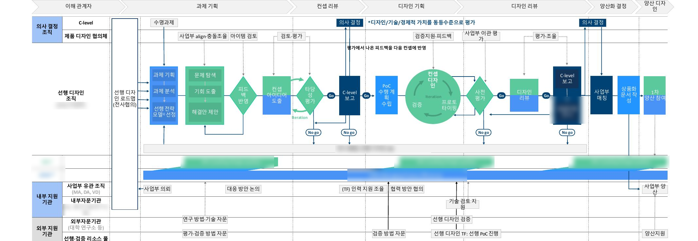

선행 디자인은 있지만,
상품화로 이어지는 길이 없다.
사업부와 전사 디자인 조직이 각자 선행 디자인을 진행하고 있었지만, 선행에서 상품화로 연결되는 공통 프로세스가 없어 조직마다 판단 기준이 달랐습니다.
사업부·전사 디자인 조직이 각자 선행 디자인을 보유
사업성·타당성을 검증할 공통 기준이 없음
선행 결과가 상품화 단계로 이어지기 어려움
문제 정의는 프로젝트 제안 자료를 기준으로 합니다.
연구팀은 해외 5개 기업을 비교해,
5단계 프로세스를 제안했다.
연구팀은 Dyson · Apple · 현대차 · LG · Philips 등 선행 디자인이 강한 기업의 조직·철학·개발 프로세스를 비교 분석하고, 사내 인터뷰로 현재 프로세스의 공백을 확인해 과제 기획부터 양산화 결정까지 5단계 흐름을 제안했습니다. 이 비교·제안은 팀 공동 작업이며, 제가 맡은 부분은 이를 운영 도구로 옮기는 툴킷 제작과 실무진 사용 관찰·수정입니다.

컨셉 리뷰 · 디자인 리뷰 · 양산화 결정 단계마다 Go·No-Go 판단 지점과 책임 역할을 지정해, 진행 여부가 사람이 아니라 기준으로 결정되도록 설계했습니다.
해외 기업 비교는 공개된 자료를 근거로 한 조사이며, 각 기업의 내부 운영 방식을 직접 확인한 결과는 아닙니다.
프로세스를 네 가지 영역의
도구와 방법으로, 운영 가능하게.
제안한 프로세스를 실제로 쓸 수 있도록 계획 · 평가 · 상품화 · 관리운영 4개 영역별로 개선 과제를 나누고, 각 영역의 도구·방법을 디지털 툴킷으로 제작했습니다. 이 툴킷 제작이 제가 직접 맡은 부분입니다.
| 영역 | 도구 · 방법 |
|---|---|
| 계획 | 선행 과제 기획서 · 신속 PoC 운영 가이드 |
| 평가 | 정성 · 정량 평가 척도 · 어워드 심사 기준 기반 체크리스트 |
| 상품화 | 디자인 원안 기획서 · 양산 이관 문서 |
| 관리 · 운영 | 역할별 운영 가이드 · 진행 현황판 |
Good Design, IDEA, Reddot, IF Design 등 디자인 어워드의 심사 기준을 참고해, 기업 부합성부터 생산성까지 9개 영역의 평가 질문 Pool을 구성했습니다.
표는 제안 자료의 도구·방법 체계를 요약한 것입니다. 실제 사내 도입 여부와 운영 성과는 이 자료로 확인되지 않습니다.
완성이 아니라 시작으로 보고,
실제 사용을 관찰했다.
툴킷 초안을 들고 삼성 실무진 4명이 참여하는 워크숍을 열어, 실제 작성 과정을 관찰했습니다.
관찰에서 수정으로
실무진이 어느 항목에서 멈추는지, 어떤 질문을 다시 묻는지를 기록했습니다. 그 결과를 바탕으로 질문의 순서와 표현, 항목 구성을 수정했습니다.
이관 이후까지 고려하기
툴킷을 전달하고 끝나는 산출물이 아니라, 전달 이후의 활용까지 고려해 예상 산출물과 담당 역할, 이관 후 활용 계획을 보완해 전달했습니다.
워크숍 관찰과 수정 내용은 당시 진행 기록을 기준으로 하며, 수정 전후의 사용성을 정량적으로 비교한 자료는 아닙니다.
체계화된 프로세스와 툴킷,
다음은 현장 적용 이후의 검증.
5단계 프로세스 · 4개 영역 도구·방법 · 9개 평가지표
4명 참여 · 관찰 기반 수정
제안한 프로세스와 툴킷이 실제 프로젝트에 적용된 이후의 운영 성과는 이 자료만으로 확인되지 않습니다.